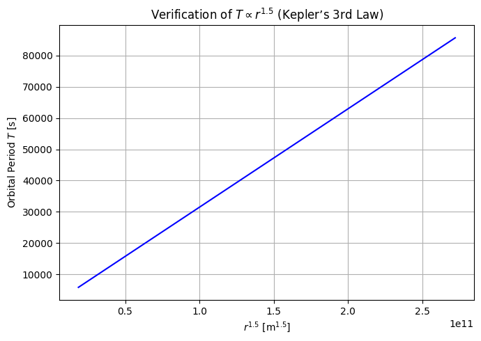

📘 Problem 1: Orbital Period and Orbital Radius
🔢 Task 1: Derive the relationship between orbital period and radius
🔬 Theoretical Background
From Newton’s Law of Gravitation and centripetal force for circular orbits:
Equating both:
Orbital period \(T\) is related to velocity:
Substitute \(v^2\):
💻 Python Code – Kepler’s Law Formula Simulation
import numpy as np
import matplotlib.pyplot as plt
# Constants
G = 6.67430e-11 # gravitational constant (m^3 kg^-1 s^-2)
M = 5.972e24 # mass of Earth (kg)
# Define orbital radius range (m)
radii = np.linspace(7e6, 4.2e7, 100)
# Calculate orbital period using the derived formula
T = 2 * np.pi * np.sqrt(radii**3 / (G * M))
# Plot period vs radius^1.5 to show linearity
plt.figure(figsize=(7,5))
plt.plot(radii**1.5, T, color='blue')
plt.xlabel("$r^{1.5}$ [m$^{1.5}$]")
plt.ylabel("Orbital Period $T$ [s]")
plt.title("Verification of $T \\propto r^{1.5}$ (Kepler’s 3rd Law)")
plt.grid(True)
plt.tight_layout()
plt.show()

🛰️ Task 2: Implications for Astronomy
🌌 Explanation
Kepler's Third Law is fundamental for understanding how celestial bodies move and interact. It allows astronomers to:
- 🪐 Determine masses of planets and stars by observing satellite orbits.
- 🌍 Estimate distances in solar and extrasolar systems.
- 🛰️ Design satellite orbits (e.g. GPS, geostationary satellites).
- 🔭 Detect exoplanets by measuring how a star wobbles due to an unseen companion.
💻 Python Code – Mass Estimation from Orbital Data
Example: Estimate Earth's mass from Moon’s orbit.
# Moon data
T_moon = 27.3 * 24 * 3600 # seconds
r_moon = 3.84e8 # meters
# Rearranged formula: M = 4π²r³ / (GT²)
M_earth_est = 4 * np.pi**2 * r_moon**3 / (G * T_moon**2)
print(f"Estimated Earth mass: {M_earth_est:.2e} kg")
🌍 Task 3: Analyze Real-World Examples
📌 Examples
-
Moon orbiting Earth
-
\(r = 3.84 \times 10^8 \, \text{m}, \; T = 27.3 \, \text{days}\)
-
From this, Earth's mass can be estimated accurately.
-
Earth orbiting Sun
-
\(r = 1.496 \times 10^{11} \, \text{m}, \; T = 365.25 \, \text{days}\)
-
Useful for measuring astronomical units (AU).
-
Mars vs Jupiter
-
Jupiter’s orbital period is ≈11.9 years, and its distance is much greater — validating \(T^2 \propto r^3\).
💻 Python Code – Compare Planets (Simplified)
# Orbital data for planets (AU and years)
r_AU = np.array([0.39, 0.72, 1.0, 1.52, 5.2, 9.58]) # Mercury to Saturn
T_years = np.array([0.24, 0.61, 1.0, 1.88, 11.86, 29.45])
# Convert to SI
r_m = r_AU * 1.496e11
T_s = T_years * 365.25 * 24 * 3600
# Check T² vs r³
plt.figure(figsize=(7,5))
plt.plot(r_m**3, T_s**2, 'o-', color='green')
plt.xlabel("$r^3$ [m³]")
plt.ylabel("$T^2$ [s²]")
plt.title("Solar System: $T^2$ vs $r^3$")
plt.grid(True)
plt.tight_layout()
plt.show()
💻 Task 4: Implement Simulation & Extend to Elliptical Orbits
🧪 Simulation of Circular Orbits
Already shown above — the code verifies \(T^2 \propto r^3\) with circular orbits around Earth and Sun.
🟣 Elliptical Orbits: Generalization
For elliptical orbits, Kepler’s Law still applies:
Where \(a\) is the semi-major axis. This generalization allows the same method to work for:
- Planets with eccentric orbits (e.g. Pluto)
- Comets like Halley’s comet
- Binary star systems
💻 Optional Code – Elliptical Orbit Plot (2D)
# Sample elliptical orbit
a = 1.5e11 # semi-major axis
e = 0.6 # eccentricity
theta = np.linspace(0, 2*np.pi, 1000)
r = (a * (1 - e**2)) / (1 + e * np.cos(theta))
# Convert to Cartesian
x = r * np.cos(theta)
y = r * np.sin(theta)
plt.figure(figsize=(6,6))
plt.plot(x, y, label=f"e={e}")
plt.plot([0], [0], 'yo', label="Focus (Sun)")
plt.title("Elliptical Orbit")
plt.xlabel("x [m]")
plt.ylabel("y [m]")
plt.axis('equal')
plt.grid(True)
plt.legend()
plt.tight_layout()
plt.show()
✅ Summary
| Task | Covered |
|---|---|
| 1. Derivation of Kepler’s Law | ✔️ |
| 2. Implications in Astronomy | ✔️ |
| 3. Real-World Examples | ✔️ |
| 4. Computational Model + Elliptical Case | ✔️ |